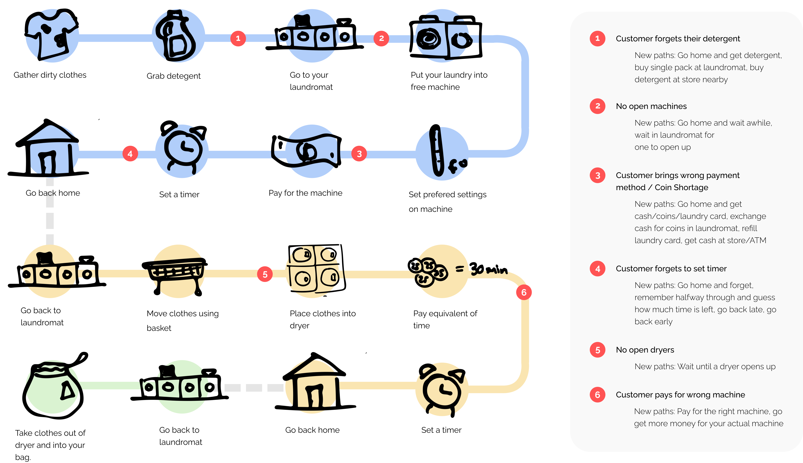
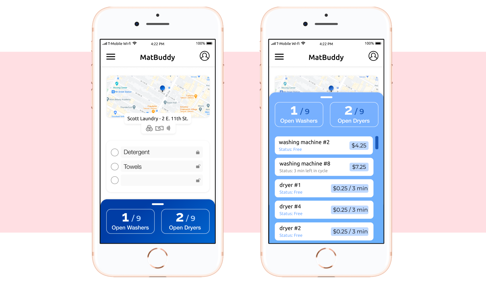
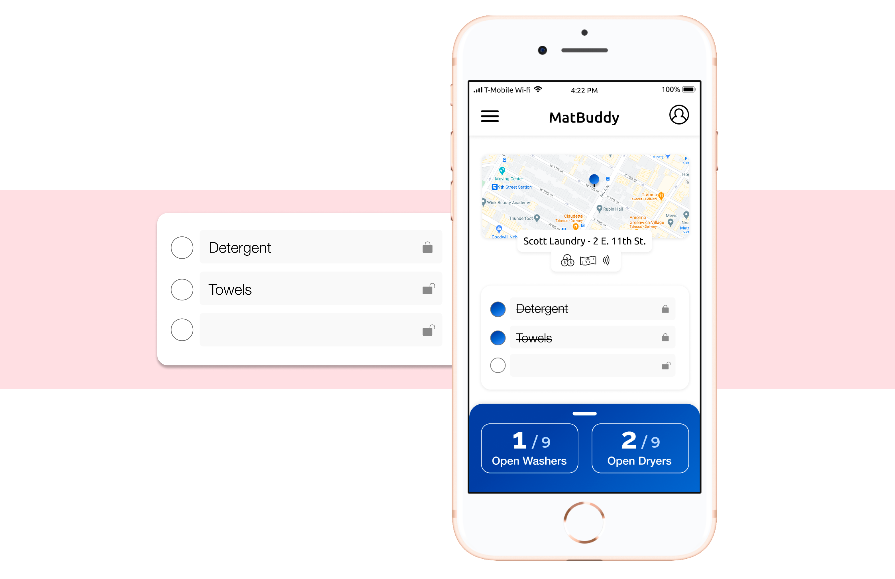
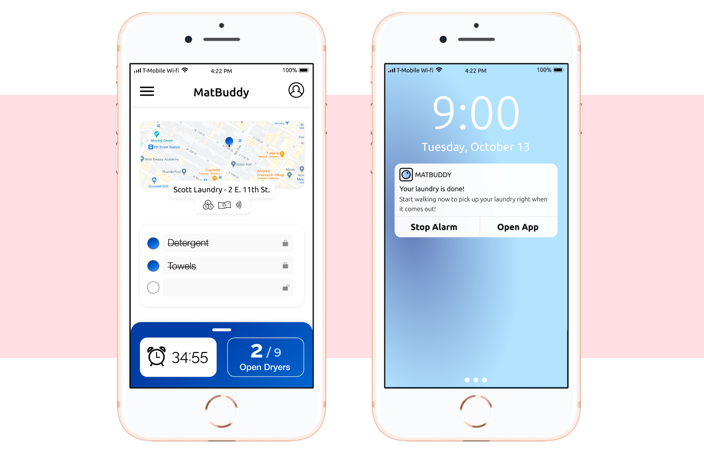

isabelanguera2@gmail.com
(434) 907-2508
The Goal
Design an app for self-service laundry that will make the experience more efficient.
Sarah's current laundry experience goes like this:
To tackle some of the above painpoints there are a few key features in the app that aim to make the process less tedious.
App Features
When a user opens Matbuddy for the fist time, part of the onboarding experience involves picking the best laundromat for them. Instead of settling for the one that’s closest but more expensive, or cheapest but far away, we give the information required to choose the best laundromat for you. Based on an address or current location, we tell the user how far each laundromat is, the cost of using their machines, and the payment type required. This way they can make a choice that will best suit them.

Don’t waste a trip to the laundromat just to find that all the machines are in use. MatBuddy allows users to see the status of their laundromat’s machines. This information is front and center and even allows you to see each individual machine that is available or soon to be done. If you know that one is worse than others, this assures that you can avoid it.
Don’t forget anything that you want to wash. List out items you tend to forget, and check them off as you pack them. If you want an item to stay on the list for every trip, lock it and it will stay on there toggling back to unpacked once each laundry trip is done.
Initiating a machine will also start a timer that will ring and send you a notification when your machine is done, and accounts for travel time so that you are as timely as possible.
Updated Experience Flow
When using MatBuddy, Sarah's new laundromat experience goes like this:
Takeaways
This was a project where the importance of mapping out the experience flow was really important; Being able to visualize and find the pain points in current user flows made it a lot easier to approach the app from the beginning.
isabelanguera2@gmail.com
(434) 907-2508